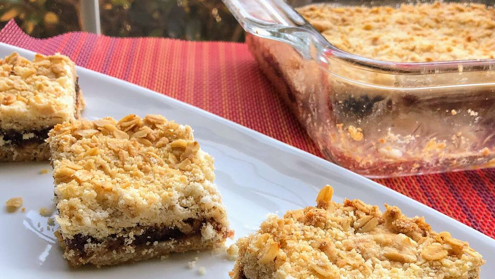

Date Crumble

Description
Simple treats I've always loved.
Ingredients
Filling
- 1 cup pitted and chopped dates, or to taste
- ¼ cup cold water, or as needed
- 2 tablespoons white sugar
- 1 teaspoon vanilla extract, or more to taste
Crumble
- 1⅜ cups self-rising flour
- ¾ cup margarine
- 1 cup oats
- ¾ cup white sugar
Directions
- Preheat oven to 355 degrees F (180 degrees C). Grease a 9-inch square baking dish.
- Combine dates, water, 2 tablespoons sugar, and vanilla extract in a saucepan; cook and stir over medium heat until filling mixture forms a paste, about 5 minutes. Add more water if filling gets too thick. Remove saucepan from heat and cool.
- Place flour in a bowl and rub margarine into flour using your hands until mixture resembles bread crumbs; stir in oats and 3/4 cup sugar. Press 1/2 of the mixture into the prepared baking dish. Spoon filling over over crust, smoothing with the back of the spoon, leaving a thin border between the filling and the edge of the dish. Sprinkle the remaining crumble mixture over filling.
- Bake in the preheated oven until top is golden brown, 40 to 45 minutes.